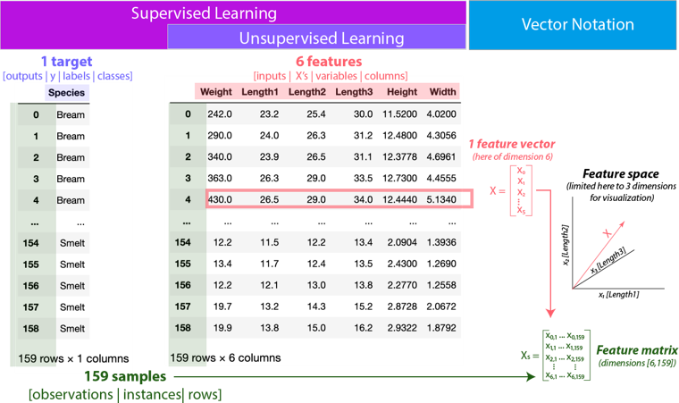

Linear Regression#
import numpy as np
import pandas as pd
from sklearn.model_selection import train_test_split
from sklearn.impute import SimpleImputer
from sklearn.preprocessing import OneHotEncoder
from sklearn.linear_model import LinearRegression
Feature matrix#
ในตารางหนึ่ง เราสามารถแปลงข้อมูลในแถวเป็น column vector แล้วเอา column vector ของแต่ละแถวในตารางมาต่อกันจะได้ feature matrix

Ordinary least square (OLS) regression#
\[\hat{y} = \beta_1\boldsymbol{x}_1 + \beta_2\boldsymbol{x}_2 + ... + \beta_n\boldsymbol{x}_n - \beta_0\]
\(\hat{y}\) = predicted label
\(\beta_i\) = weight
\(\beta_0\) = bias
\(\boldsymbol{x}_i\) = feature vector
\[\Longrightarrow \hat{y} = \beta X\]
\(\beta\) = coefficient matrix
\(X\) = feature matrix (มีสมาชิกที่ match กับ \(\beta_0\) คือ 1)
สิ่งที่เราต้องทำคือหา \(\beta\) ที่ทำให้ residual sum of square ต่ำสุด
\[E = \sum_{i=1}^n (y_i - \hat{y}_i)^2\]
เราสามารถทำ linear regression โดยใช้ sklearn.linear_model.LinearRegression
Weight และ bias สามารถเข้าถึงได้จาก attribute ชื่อ coef_ และ intercept_ ตามลำดับ โดย feature ที่มี weight มากกว่าจะมีความสำคัญมากกว่า ดังนั้น เราสามารถเอา feature ที่สำคัญน้อยออกเพื่อลดจำนวน feature ที่จะใช้ใน model ได้ (feature selection)
# Perform data pre-processing - we need only numerical features to perform linear regression
# Import data and drop duplicate
data = pd.read_csv("../data/India_air_quality.csv").drop_duplicates()
# Separate features (X) and target (y)
X, y = data.drop(columns="rspm"), data['rspm']
# Drop row containing non-sense values
X = X.drop(X[(X['no2'] < 0) | (X['rainfall'] < 0)].index)
y = y[X.index]
# Drop features with missing values >30%
X = X.drop(columns=["stn_code", "spm", "pm2_5"])
# Replace missing values in numerical columns with their means
num_cols = X.select_dtypes(include=np.number).columns
X[num_cols] = SimpleImputer(strategy="mean").fit_transform(X[num_cols])
# Train-test split
X_train, X_test, y_train, y_test = train_test_split(X, y, train_size=0.7, random_state=42)
X_train
| state | location | type | so2 | no2 | date | rainfall | |
|---|---|---|---|---|---|---|---|
| 122374 | Delhi | Delhi | Residential | 6.0 | 67.0 | 19/09/2013 | 79.924305 |
| 227444 | Punjab | Gobindgarh | Residential | 10.0 | 41.0 | 07/10/2012 | 44.527453 |
| 298139 | Maharashtra | Mumbai | Industrial | 2.4 | 27.7 | 05/08/2008 | 66.356836 |
| 127296 | Assam | Guwahati | Others | 9.8 | 16.5 | 15/12/2009 | 84.065524 |
| 271367 | Maharashtra | Nashik | Others | 45.0 | 36.5 | 10/01/2007 | 78.939661 |
| ... | ... | ... | ... | ... | ... | ... | ... |
| 119932 | Odisha | Talcher | Industrial | 7.0 | 14.0 | 20/07/2013 | 101.749606 |
| 259465 | Maharashtra | Akola | Residential | 8.0 | 8.0 | 27/03/2015 | 42.746942 |
| 131998 | Uttar Pradesh | Kanpur | Residential | 2.0 | 23.0 | 04/12/2015 | 71.880503 |
| 146951 | Maharashtra | Akola | Residential | 10.0 | 12.0 | 24/02/2012 | 93.267317 |
| 122012 | Assam | Guwahati | Others | 2.5 | 12.5 | 13/04/2006 | 59.100358 |
216735 rows × 7 columns
# We need only numerical features
X_train, X_test = X_train[["so2", "no2", "rainfall"]], X_test[["so2", "no2", "rainfall"]]
# Perform linear regression
model = LinearRegression()
model.fit(X_train, y_train)
LinearRegression()In a Jupyter environment, please rerun this cell to show the HTML representation or trust the notebook.
On GitHub, the HTML representation is unable to render, please try loading this page with nbviewer.org.
LinearRegression()
# Weights (beta_1, ..., beta_n)
model.coef_
array([ 0.23719903, 1.38926121, -0.00294318])
# Bias (beta_0)
model.intercept_
68.88402719905041
# Predict using test set
model.predict(X_test)
array([ 98.58600063, 85.79773924, 115.3326856 , ..., 96.7785519 ,
99.039542 , 116.62335996])